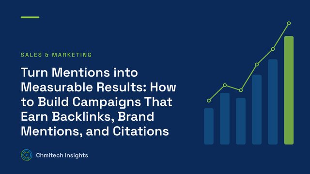
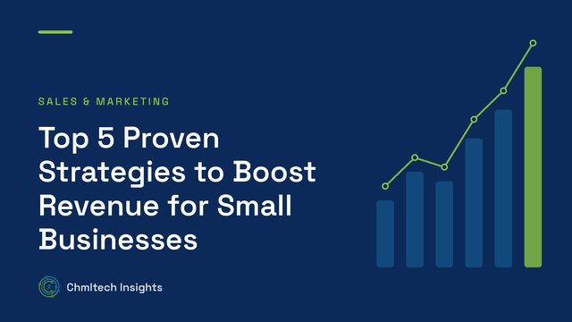

One-page strategic plan
Purpose, target customers, three-year picture and this year's goals on a single page the whole team can read.
Home / Solutions / Leadership Operating System
Solutions · Leadership and execution
Run the business on a simple, shared rhythm.
We help leadership teams agree where the business is going, turn that into a few priorities at a time, and build the meetings, measures and roles that keep everyone moving in the same direction.
Overview
It is the set of routines a leadership team uses to run the business: how it sets direction, chooses priorities, tracks progress, solves problems and holds people accountable. Every company has one, whether it was designed or just grew. We help you design a simple one that fits your size and culture, using well-established management practices rather than a branded method.
Our approach
Services
Purpose, target customers, three-year picture and this year's goals on a single page the whole team can read.
A short list of the most important outcomes for the quarter, each with one owner and a clear finish line.
Five to fifteen numbers that show whether the business is on track, reviewed every week.
A fixed agenda that reviews the numbers and priorities, then spends most of the time solving the biggest issues.
A clear chart of the functions the business needs, who owns each one, and what that owner is accountable for.
A simple, repeatable way to identify the real cause of a problem, decide what to do and assign the action.
Questions
No. We use widely known management practices: strategic planning, quarterly priorities, scorecards, meeting cadence and clear roles. We fit them to your business rather than install a fixed program.
Most teams have the plan, scorecard and meeting rhythm running within one quarter. It then takes two or three quarters of practice to become habit.
It suits owner-led businesses with roughly 10 to 250 people, where the leadership team is large enough to need a shared rhythm.
Free learning
From our insights

Sales & Marketing
Learn how to engineer campaigns that earn backlinks, brand mentions, and citations to increase authority, visibility, and organic SEO performance.

Sales & Marketing
Explore 5 proven strategies to boost small business revenue through marketing, customer retention, pricing, and operational efficiency.
Book a strategy call. We will talk through your goals, pain points and where AI, systems or process work can make the biggest difference.